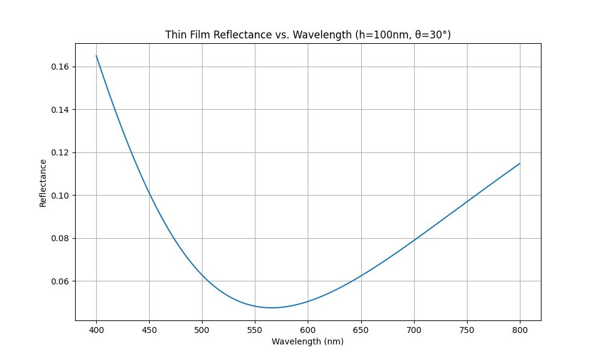
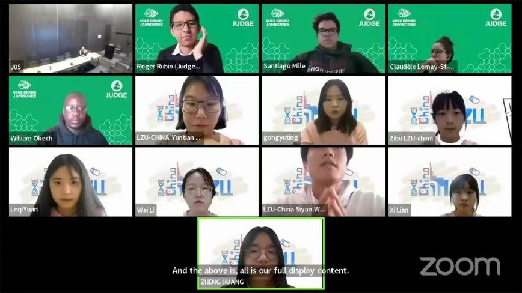

工业视觉、光学测量与 AI4Math
3 papers19 citationsh-index 2Google Scholar, 2026-10
摘要
研究从工业检测出发：锂电池极片缺陷分割、三频外差相位测量、基于光谱反射的薄膜厚度测量。之后转向 AI 辅助数学研究，用自研的 MathArc 系统研究 Erdős–Szekeres 问题的开放情形 ES(7)=33，得到一批带可重放证书的局部结构结果，手稿已整理成 arXiv 格式，原问题仍未解决。本科阶段的数学建模项目涉及自行车功率分配、FAST 反射面优化和传染病动力学。

参考文献
- R. Ma, C. Li, Y. Xing, S. Wang, et al. Defect focused Harris3D & boundary fine-tuning optimized region growing: Lithium battery pole piece defect segmentation. Measurement, 242: 116147, 2025.
- W. Chen, Y. Li, R. Ma, S. Wang, et al. X+1+1: a fast three-frequency heterodyne absolute phase measurement method integrating modified Fourier transform. Optical Metrology and Inspection for Industrial Applications XI, SPIE 13241: 27–34, 2024.
- J. Li, S. Wang, J. Bai, X. Wang, X. Li. Spectral Reflectometry-Based Film Thickness Measurement Using Particle Swarm Optimization. ICEICT, 2025.
研究项目
- 2026ES(7)=33 结构研究 · AI4Math，公开档案
- 2022iGEM：利用编程益生菌系统靶向治疗结直肠癌 · LZU-CHINA 队，负责数学建模 · 金奖
- 2022不同类型自行车手的最优功率分配 · 美赛 M 奖
- 2021FAST 主动反射面形状优化 · 国赛省一
- 2021带迁移和脉冲接种的传染病模型 · 校级创新项目
